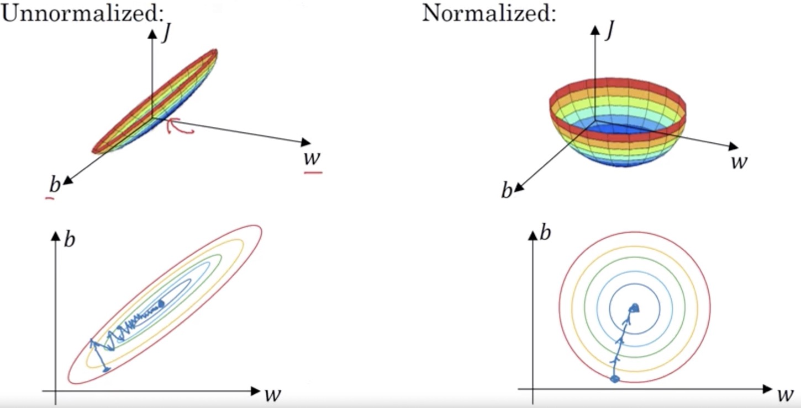

Normalization refers to a process that makes something more normal or regular.
In statistics, normalization means adjusting values measured on different scales to a common scale, or adjustments to bring the entire probability distributions of adjusted values into alignment. Normalization in deep learning can make the model to train efficiently.
Why does Normalization work?
Intuition 1: Input Normalization $\frac{X - \mu}{\sigma}$
Make training less sensitive to the scale of features.
After optimization, the feature with a large scale will always be weighted with a small value ($\omega_{small}$), and vise versa ($\omega_{large}$). Because of the large scale of the feature, a tiny change in the small weight ($\omega_{small}$) will change the prediction by a lot compared to the same change in the large weight ($\omega_{large}$). It means that setting $\omega_{small}$ correctly might dominate the optimization process and the feature with a large scale is of more importance which actually makes no sense.
Make optimization well-conditioned.
The rough intuition is that the cost function will be more round and easier to optimize when features are all on similar scales.
Cost function of the unnormalized features can be a very elongated bowl, whereas if we normalize the features, then the cost function will look more symmetric. Having an elongated cost function, we might have to use a very small learning rate and gradient descent might need a lot of steps to oscillate back and forth before it finally gets to the minimum. If we have more spherical contours, then gradient descent can pretty much go straight to the minimum and we can take much larger steps with gradient descent without much oscillation.

Intuition 2: Covariate Shift
Covariate shift refers to the problem that the distribution of the input values changes, but the concept (model) being learned remains stationary.
In deep learning, the basic idea behind normalization is to limit the covariate shift, which allows the model to learn on a more stable distribution, and would thus accelerate the training of the network.
Batch Normalization
In deep learning, we are particularly concerned with the change in the distribution of the inputs to the hidden nodes within a network. A neural network changes the weights of each layer over the training, which means that the activations of each layer change as well. Since the activations of a previous layer are the inputs of the next layer, each layer in the neural network is faced with a situation where the input distribution changes with each step (covariate shift).
Batch Normalization at Training Time
What batch normalization does is, especially from the perspective of the later layers of the neural network, it limits the earlier layers to not get to shift around much, by restricting them to have the same mean and variance. It weakens the coupling between what the early layers and the later layers.
For a layer of the network with d-dimensional input, $x = (x^{(1)},…,x^{(d)})$, each dimension is then normalized separately as following:
$$\hat{x}_i^{(k)} = \frac{x_i^{(k)}-\mu_B^{(k)}}{\sqrt{\sigma_B^{(k)^2}+\epsilon}}$$where $\mu_B^{(k)}$ and $\sigma_B^{(k)^2}$ are the per-dimension mean and variance, respectively. $\epsilon$ is added in the denominator for numerical stability and is an arbitrarily small constant.
The resulting normalized $\hat{x}^{(k)}$ have zero mean and unit variance, to restore the representation power of the network or better take advantage of the nonlinearity (if activations are normalized), a transformation step then follows as:
$$y_i^{(k)} = \gamma^{(k)} \hat{x}_{i}^{(k)} +\beta^{(k)}$$where the parameters $\gamma^{(k)}$and $\beta^{(k)}$ are subsequently learnt in the optimization process and can convert the mean and variance to any value that the network desires.
Formally, the transform $BN_{\gamma,\beta}: x_{1…m} \rightarrow y_{1…m}$ is denoted as the Batch Normalizing Transform.
There are some debates in deep learning about whether we
should normalize the value before the activation function or after it.
In practice, normalizing before the activation function is done much more often.
Regularization can be motivated as a technique to improve the generalizability of a learned model. Batch normalization has a slight regularization effect.
The mean and variance are a little bit noisy because they are estimated on a mini-batch. Similar to dropout, batch normalization adds small noise to the hidden layers and therefore has a very slight regularization effect.
We don’t particularly use to batch normalization as a regularization but use it as a way to speed up learning.
Batch Normalization at Test Time
At the test time, we use the $\gamma$ and $\beta$ learned from training, the $\mu$ and $\sigma^2$ are estimated from the training set.
Running the whole training set to get $\mu$ and $\sigma^2$ could be memory-consuming. So we keep a running average of the $\mu$ and $\sigma^2$ for each layer as we train the neural network across different mini-batches to get an estimation of them.
In practice, the moving average people usually use here is exponentially weighted average.
An exponential moving average (EMA), also known as an exponentially weighted moving average (EWMA), is a first-order filter that applies weighting factors which decrease exponentially.
The EMA for a series $Y$ is calculated recursively:
$$S_t = \begin{cases}
\alpha \cdot Y_1, & t = 1 \\
\alpha \cdot Y_t + (1 - \alpha) \cdot S_{t-1}, & t > 1
\end{cases}$$
Where:
- $\alpha$ represents the degree of weighting decrease, a constant smoothing factor between 0 and 1.
- $Y_t$ and $S_t$ are the values at a time period $t$ respectively.
This formula can also be expressed in technical analysis terms as follows:
- How the EMA steps towards the latest datum point:
$$\text{EMA}_\text{today} = \text{EMA}_\text{yesterday} + \alpha \left[\text{price}_\text{today} - \text{EMA}_\text{yesterday}\right]$$ - How the weighting factor on each data point $p_1$, $p_2$, etc., decreases exponentially by expanding out $\text{EMA}_\text{yesterday}$ :
$$\begin{split}
\text{EMA}_\text{today}
= & { \alpha \left[p_1 + (1 - \alpha) p_2 + (1 - \alpha)^2 p_3 + (1 - \alpha)^3 p_4 + \cdots \right] } \\
= &\frac{p_1 + (1 - \alpha) p_2 + (1 - \alpha)^2 p_3 + (1 - \alpha)^3 p_4 + \cdots}{1 + (1 - \alpha) + (1 - \alpha)^2 + (1 - \alpha)^3 + \cdots}
\end{split}$$since $1/\alpha = 1 + (1 - \alpha) + (1 - \alpha)^2 + \cdots$ (weighted average).
A couple of things about choosing $\alpha$:
- A higher $\alpha$ discounts older observations faster so that the EMA will adapt more quickly to the current changes.
- When compute EMA, we can think of $S_t$ as approximately averaging over $\frac{1}{\alpha}$ number of data. So with a low value of $\alpha$, the EMA is much smoother and also has more latency. (Always set to 0.1 in deep learning)
Bias correction is a technical modification that makes EMA estimate more accurate, especially during its initial phase.
The EMA is very low when the iteration just starts off and we will get a much lower value that is not a very good estimate of the first data. In order to fix the problem, we could instead of taking $S_t$, take $\frac{S_t}{1-(1-a)^t}$, namely bias correction. It will make the EMA larger when $t$ is small and make almost no difference when $t$ is large enough.
Weight Normalization
The Limitations of Batch Normalization
The key limitation of batch normalization is that it is dependent on the mini-batch.
It puts a lower limit on the batch size.
Ideally, we want to use the global mean and variance to normalize the inputs to a layer. However, it’s too costly and the mean and variance are simply estimates on mini-batch, which means that they contain a certain amount of noises.
Smaller mini-batch sizes increase the variance of these estimates. It can be a problem in settings such as online learning and reinforcement learning which is highly sensitive to noise.
It is difficult to apply to recurrent connections in recurrent neural network.
In a recurrent neural network, the recurrent activations of each time-step will have different statistics. This means that we have to fit a separate batch normalization layer for each time-step and it forces us to store the statistics for each time-step during training.
Theory of Weight Normalization
What weight normalization does is it separates the norm of the weight vector from its direction.
In an effort to speed up the convergence of optimization procedure, it proposes to reparameterize each weight vector $\omega$ in terms of a parameter vector $\boldsymbol{v}$ and a scalar parameter $g$ in the following way:
$$\omega = \frac{g}{||\boldsymbol{v}||}\boldsymbol{v}$$It then optimizes both$\boldsymbol{v}$ and $g$ using gradient descent. This reparameterization has the effect of fixing the Euclidean norm of the weight vector $\omega$: we now have $||\omega||=g$, independent of the parameters $\boldsymbol{v}$. We, therefore, call this reparameterization weight normalization.
Layer Normalization
Theory of Layer Normalization
The key feature of layer normalization is that it normalizes the inputs across the features.
The equations of layer normalization and batch normalization are similar:$$\hat{x}_i^{(k)} = \frac{x_i^{(k)}-\mu_L}{\sqrt{\sigma_L^2+\epsilon}}$$where $\mu_L$ and $\sigma_L^2$ are the mean and variance across the features, respectively.
Reference
Quora: Why do we normalize the data
Coursera: Deep Learning Specialization
Blog: An Intuitive Explanation of Why Batch Normalization Really Works
Blog: Weight Normalization and Layer Normalization Explained
Blog: An Overview of Normalization Methods in Deep Learning